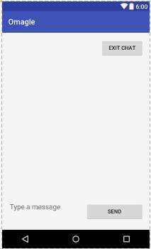
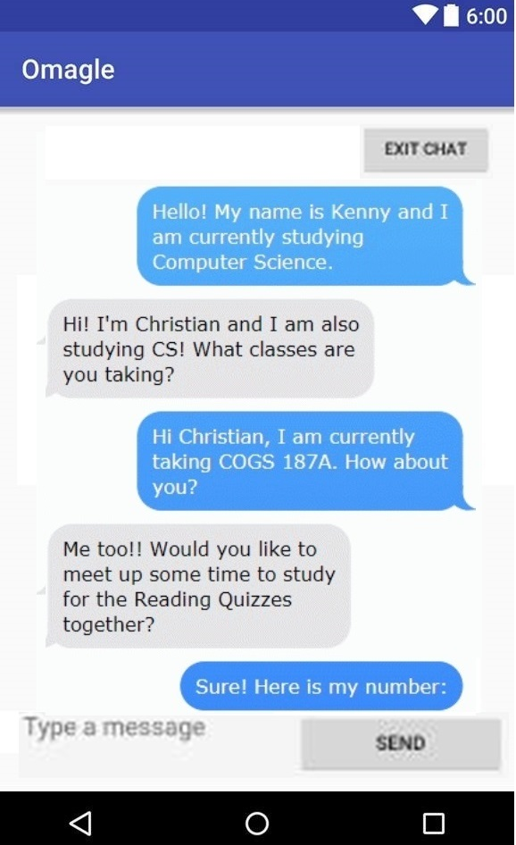
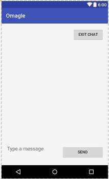
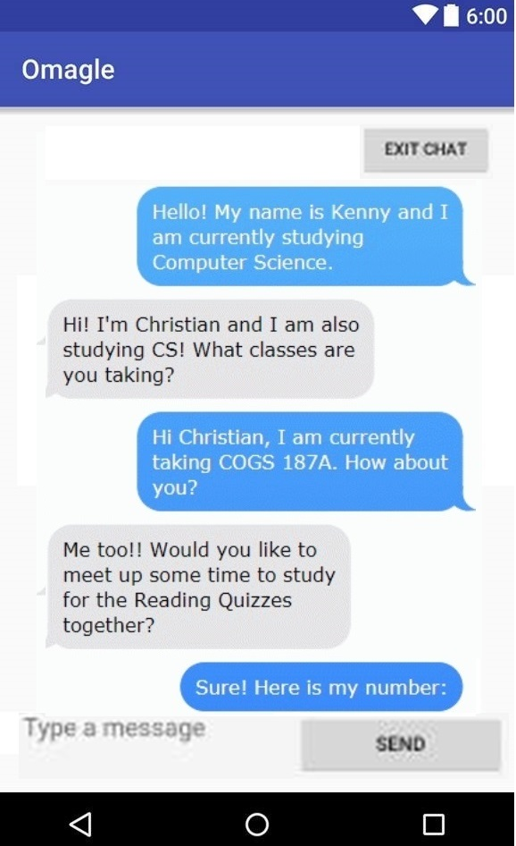

Projects
Random Messenger
About
RandomMessenger is a mobile application created by seven developers, including me, with an intent to connect students across campus. UC San Diego is notoriously known for being "socially dead," so we wanted to create a social media platform to improve this stereotype.
 



My role for this project was both a project manager and a software engineer. As a project manager, I held weekly meetings and created milestones for our teams to meet. I kept my team in check by creating and updating burn down charts to see how our progress was coming along. If anyone needed additional assistance, I was in charge of assigning someone to provide that group with additional help, whether it be the development or testing team. In addition, as the project manager, I did all the code reviews to make sure that the code that my team was submitting was accurate. If you visit our GitHub Project Commits, you will see that all of the commits had to be accepted by me (ksiu002) before the code went live.
As a software engineer, I worked on the backend development for this project. The biggest feature that I spent my time developing was the messaging part of the application. This includes the actual messaging functionality of making a messsage appear on the screen when clicking the send button, and also storing all the messages in a database for future usage.
Process
The development process for this application spanned over 10 weeks.
We used the agile model for development, as this was a relatively short term project.
As the project manager, I set milestones or goals every week that I wanted to accomplish by the end of that week, and gathered new project specifications from our customers, which were other students.
The agile model can be summed up in four major steps: requirements, design, implementation, and testing.
Requirements
This is the phase where we gathered information regarding the project requirements. Because the agile method was utilized, there were new requirements assigned by our customers on a weekly basis. In summary, the requirement was to create a mobile application that randomly connects students across the UCSD campus that allows them to message each other. Some additional features that were required in the long run were user avatars and themes. This phase is important because we needed to make sure that all the information we gathered was accurate, otherwise we could potentially fall behind if we had to go back and redo parts of my project.
Design
This is the phase where we decided how we wanted to go about implementing the project. Our customers required us to build several UML diagrams so they could have a visual understanding of the product we were going to deliver. Though no coding was involved in this phase, it was still technical as the UML diagrams listed functions we were planning on implementing. This phase is important because a poor design, such as a poor user interface, would lead to a lack of users.
Implementation
This is the phase where I actually began building the application and seeing it come to life.
The entire application was done in Java, and we used Android Studio as the IDE for development.
Java is the primary language for Android development, and all of the team had prior experience using this language, so that was our reasoning behind language choice.
To ensure that this application connected only UCSD students, we created an e-mail verification system which sent an e-mail to your @ucsd.edu e-mail address.
For the database to store the user information and user messages, we used Google Firebase.
From our research, this was a relatively easy database to use for beginners and contained some useful documentation to ease the learning curve.
This phase took the longest, as it was the first time for many of the people in my group developing a mobile application. Some of the challenges we faced were adjusting ourselves to Android Studio, and learning how to call various existing APIs, such as email authentication APIs and those from Google Firebase. The overall functionality we implemented was user authentication, messaging, and user profile generation.
Testing
This is the phase where we verified that our implementation was accurate. Our customers required us to have sufficient unit testing before commiting our code. Unit testing is a software development process in which the smallest testable parts of an application, called units, are individually and independently scrutinized for proper operation. This was done using a gradle.build file, where we placed all of our unit testing. The unit tests were viewed by our customers, and they also did their own manual testing to make sure that features were working as discussed. Upon sufficient individual testing, several full-time engineers in the team did some more thorough testing to ensure that my implementation was correct. This was necessary because programmer are prone to make mistakes when developing code. It is helpful for engineers to have other fresh eyes look and test at their code. This phase is important because it ensures that the implementation is accurate, and that it can be used by other people as well.
Challenges
This project was challenging because it was the first time doing a big mobile development project for me, along with all of the other team members. Ultimately, we had to spend a lot of time researching how to create a mobile application from scratch using Android Studio. In addition, all of the members invovled in this project were also in school, so we had to find times where we could all meet to work on this project. There were weeks where development was lacking, as we had exams to study for, but ultimately we made up for those weeks in future iterations by producing twice as much code for those weeks.